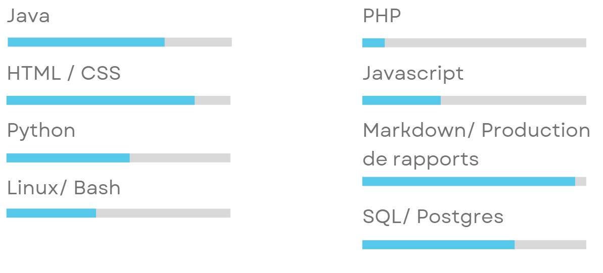

Présentation
Depuis mon enfance, l'informatique est ma passion.
J'ai commencé à travailler à l'âge de 16 ans, tout en poursuivant mes études, ce qui m'a permis de m'ouvrir au monde professionnel et à travailler mon autonomie.
Je suis également extrêmement curieux et constamment à la recherche d'activité à explorer.
En tant que travailleur assidu et passionné, je suis convaincu que je peux apporter une contribution significative à une entreprise.
Expérience professionnelle
École petit quinquin, Lomme
08/2022
Animateur centre aéré, responsable de la garderie et de la piscine
Pizz’Eli, Perenchies
07/2021 - 07/2022
Employés polyvalent, Livreur de pizza
Compétences

Le BUT Informatique me permet d'acquérir des compétences en programmation, web, ... De plus la formation donne une vue globale du monde professionnel, grâce à des formations en gestion de projet, gestion d'entreprise, comptabilité, économie et droit.
Éducation
BUT Informatique, IUT A - Université de Lille
2022 - 2025
[En cours] BUT Informatique, avec possibilité de faire un parcours "Déploiement d'applications communicantes et sécurisées"
Lycée parcours géneral, lycée Jean Perrin à Lambersart
2019 - 2022
Parcours géneral, avec spécialités Numérique et Sciences Informatiques et Mathématiques
Baccalauréat obtenu avec mention
Collège Saint Odile à Lambersart
2015 - 2019
Brevet des collèges obtenu avce mention "Bien"
Coordonées
Adresse : 17 rue du Parc Tournebride, 59160 Capinghem, App22
Numéro : 06.25.32.02.16
E-mail personnel : baptiste.collesson@gmail.com
E-mail de l'univeristé : baptiste.collesson.etu@univ-lille.fr
Loisirs
Je suis passionné par les technologies en général, notamment l'informatique, le bricolage, l'impression 3D et la réalité virtuelle.
J'aime explorer les dernières avancées technologiques et découvrir de nouvelles façons d'utiliser la technologie pour améliorer ma vie quotidienne.
J'aime également participer à des projets DIY, en construisant des gadgets électroniques ou en modifiant des appareils existants pour les adapter à mes besoins.
CV
Mon CV est mis à disposition
Téléchargement ci dessous :